OpenStreetMap
Limite do município, malha de vias e obstáculos mapeados (travessias, pontos de ônibus, acessos de garagem, árvores existentes). Classifica as vias elegíveis para receber vagas.
Metodologia
Como calculamos, município por município, pontos de plantio em vias públicas a partir de dados abertos — com cinco métodos diferentes, cada um com suas vantagens e limites, que explicamos em detalhe nesta página.
Fontes de dados
Nenhuma fonte isolada é suficiente. Usamos três bases abertas, cada uma para o que ela faz melhor — e comparamos as três entre si para medir onde elas discordam.
Limite do município, malha de vias e obstáculos mapeados (travessias, pontos de ônibus, acessos de garagem, árvores existentes). Classifica as vias elegíveis para receber vagas.
Pegadas de edificações (Google Open Buildings, Microsoft, OSM combinados). Usadas para medir, de forma independente, onde realmente estão os prédios de cada quadra.
Setores censitários urbanos e a Base de Faces de Logradouros: a geometria oficial de cada face de quadra, com setor, quadra e logradouro associados a cada vaga.
Uma quarta fonte, opcional, entra só como atributo: rasters de cobertura de copa (GFW e GLAD), que dizem quanta copa já existe em volta de cada vaga.
O desafio da precisão
Comparamos o eixo das vias no OSM, a face de quadra do IBGE e a parede dos prédios na Overture para o mesmo trecho de rua. Elas discordam entre si em 2 a 3 metros — mais do que a largura de uma calçada inteira.
Discrepância observada entre eixo OSM e face IBGE: p90 de 2,7 m (Suzano) a 4,9 m (Sorocaba).
Testamos empurrar cada ponto para dentro da calçada com uma margem de segurança fixa a partir do eixo da via. O resultado piorou: em trechos com recuos irregulares, os pontos "seguros" caíam dentro de lotes e sobre telhados. A distância até a fachada vem do recuo do prédio, não da calçada — não é uma margem fixa e utilizável em qualquer lugar.
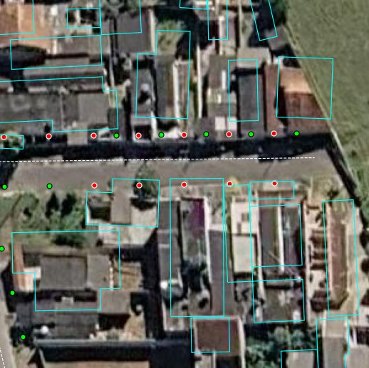
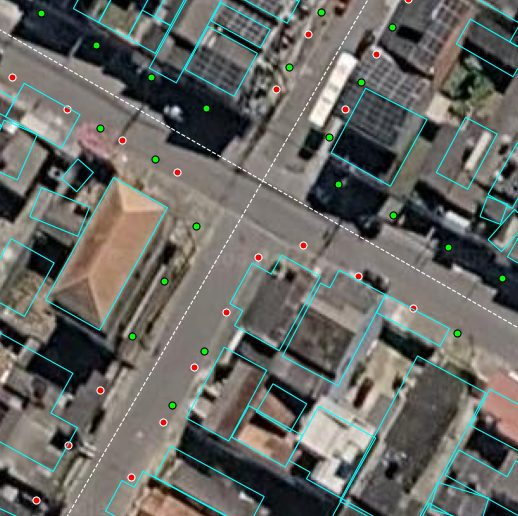
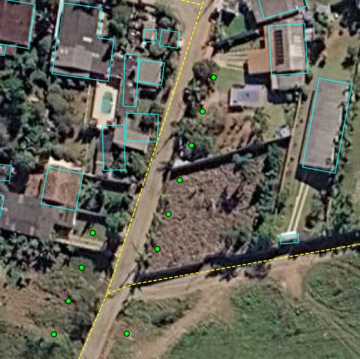
Regras comuns
Os cinco métodos de alocação (ver "Cinco métodos, lado a lado" logo abaixo) partem da mesma base: só vias de classe elegível (residencial a primária) entram no cálculo, o porte da árvore vem da classe da via, e as mesmas zonas de exclusão valem para todos. O que muda de um método para outro é só a distância da vaga até o leito carroçável — da calçada estimada até, deliberadamente, o próprio eixo da via em um deles, usado como referência de comparação.
Esquema ilustrativo de uma via: calçadas nas bordas, leito carroçável ao centro.
Trechos próximos a obstáculos mapeados no OSM ficam sem vaga, com uma distância que varia por tipo — a mesma regra vale nos cinco métodos:
3 m de cada lado.
2 m de cada lado.
12 m de cada lado.
4 m de raio, dentro de um alcance de busca de 8 m.
Vagas (verde) espaçadas ao longo da via ou face de quadra, respeitando esquinas e obstáculos — mesma lógica nos cinco métodos.
O espaçamento é a distância em linha reta entre duas árvores — e é assim que ele é medido, inclusive em curvas e já na posição da calçada. Andar 10 m ao longo de uma curva leva a um ponto a menos de 10 m em linha reta, porque a corda é sempre menor que o arco; na calçada do lado de dentro da curva, mais ainda. O algoritmo avança ao longo da via até a próxima posição que fique a pelo menos o espaçamento da anterior, nos dois lados.
Curva de 20 m de raio, vagas na calçada interna (5 m do eixo). À esquerda, passos de 10 m no eixo deixam as vagas a 7,4 m entre si; à direita, o passo cresce para 13,6 m no eixo e as vagas ficam a 10,0 m.
O OpenStreetMap divide a mesma rua em vários trechos sempre que alguma característica muda (pavimento, ponte, limite de velocidade). Esses trechos são unidos de volta numa via contínua, e o afastamento de 6 m só vale nas pontas que são cruzamento de verdade — onde três ou mais vias se encontram, ou onde uma rua termina no meio de outra (um T).
Sem a união, cada emenda do OSM abria um vão de 12 m ou mais sem nenhum cruzamento — e reiniciava a contagem do espaçamento.
Quando a posição seguinte cai numa esquina ou perto de um obstáculo, ela é registrada como vaga inviável e a caminhada recomeça logo após o fim do trecho bloqueado, em vez de pular mais um espaçamento inteiro.
Exemplo calculado pelo próprio algoritmo: rua reta de 100 m com uma travessia entre 33 e 39 m, espaçamento de 10 m.
Um candidato que esbarra numa dessas regras, que — perto de um cruzamento — acabaria dentro do leito carroçável de uma via transversal, ou que ficaria a menos do espaçamento mínimo de uma vaga de outra rua, não vira uma lacuna silenciosa: ele aparece no mapa como vaga inviável, com a cor do porte que teria e um contorno indicando o motivo. É a mesma camada que explica, visualmente, por que o espaçamento nunca é perfeitamente regular.
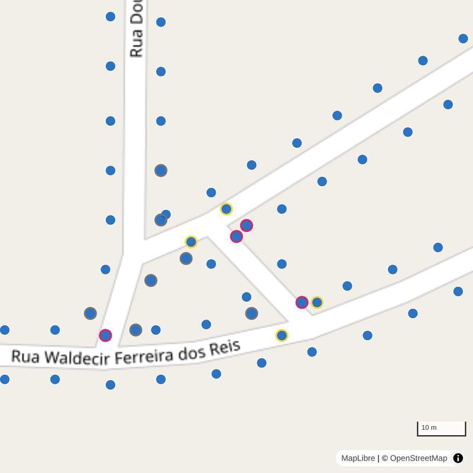
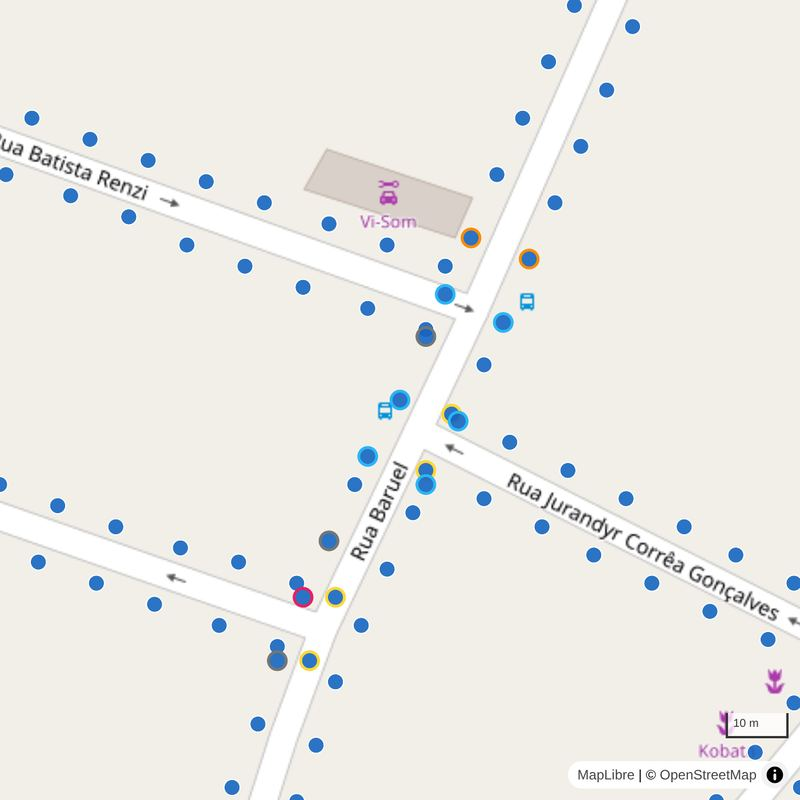
Cinco métodos, lado a lado
O webmap deixa alternar entre os cinco métodos abaixo para o mesmo município, um de cada vez — útil para comparar visualmente o que cada fonte de dados consegue garantir e o que ela só consegue estimar. O método 1 abre por padrão e fica sobre o eixo da via, de propósito: é a referência de quanto os outros quatro conseguem melhorar a posição lateral da vaga.
Todos usam o IBGE para identificar setor, quadra, face e logradouro oficial de cada vaga sempre que há uma face a menos de 25 m — no método 4 isso já vem do vínculo direto; nos outros é um pareamento à parte, só para preencher metadados, que nunca move o ponto.
Métodos em detalhe
Os cinco métodos compartilham a mesma caminhada ao longo da via, com as regras comuns acima. O que muda é sobre qual linha se caminha e como cada posição ao longo dela vira um ponto no mapa. Abaixo, na mesma ordem do seletor do webmap, cada método com um esquema e capturas reais do mesmo trecho de Suzano — para comparar lado a lado. A matemática completa está em ALGORITMOS.md.
1 · osm_eixo
A vaga é o próprio ponto do eixo da via do OSM. É o método mais simples e o que melhor mostra, sem distração, onde a rua comporta árvores ao longo do seu comprimento: o espaçamento, as esquinas e os obstáculos.
Uma vaga por posição, sobre o eixo.
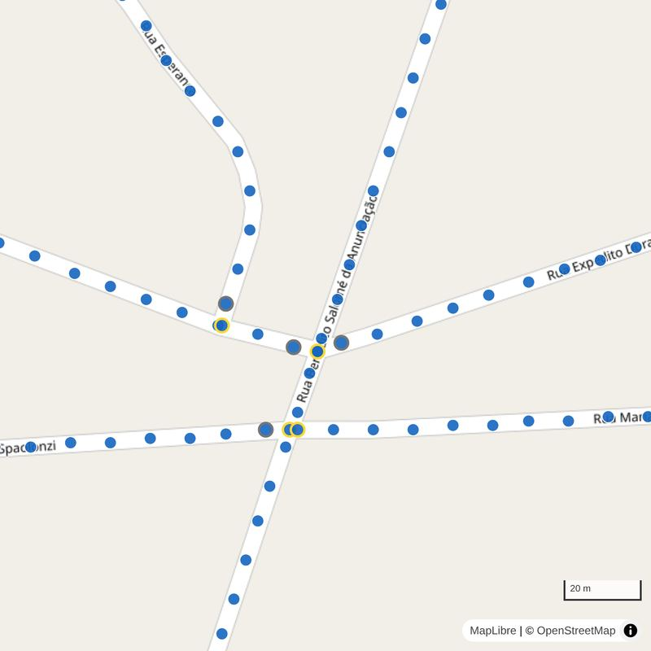
2 · osm_calcada_lado
Igual ao método 3, mas com vagas em um lado só de cada rua — útil onde as calçadas são estreitas e plantar dos dois lados não é realista. O lado é escolhido pelos endereços do IBGE.
O lado com menos endereços recebe as vagas; o outro fica livre.
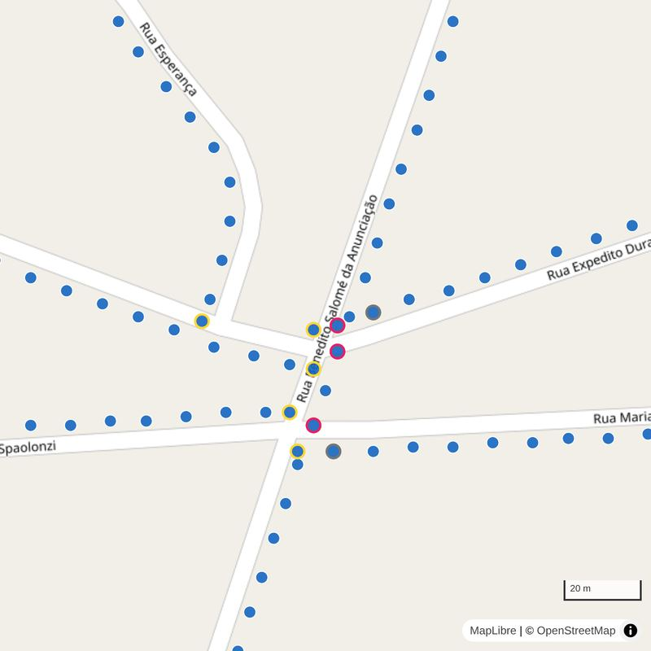
3 · osm_calcada
Desloca cada vaga do eixo para a calçada estimada, dos dois lados. Depende só do OSM: a largura do leito vem da classe da via (residencial, terciária…) e, quando existe, das tags de largura ou número de faixas.
Duas vagas por posição, uma em cada calçada.
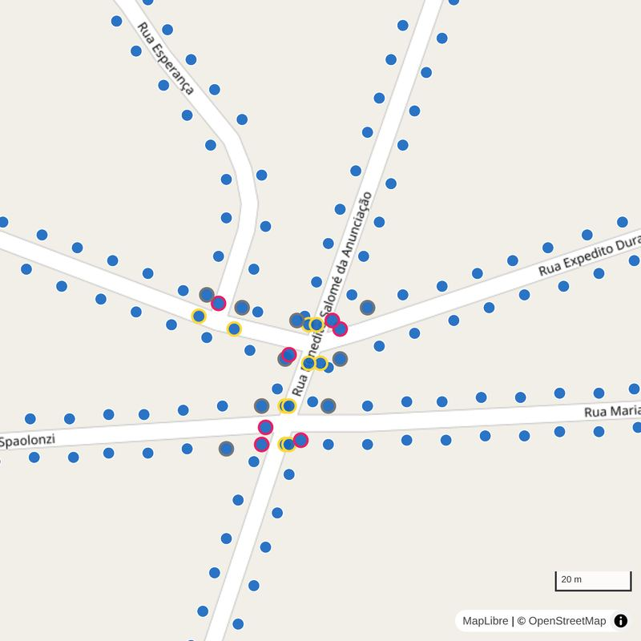
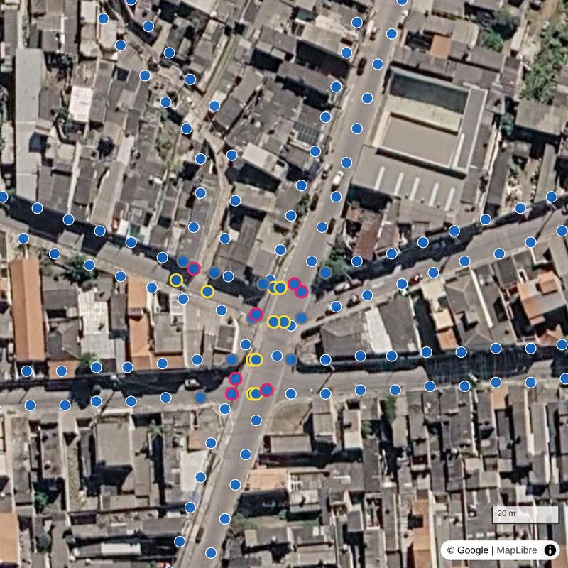
4 · face_ibge
Caminha sobre a face de quadra do IBGE em vez do eixo da via. Cada vaga sabe em qual setor, quadra, face e logradouro oficial está, e a posição ao longo da face é exata. A posição lateral é ajustada: em muitas quadras a face foi digitalizada rente à via, então cada ponto é empurrado até a calçada, sem passar da fachada.
A face do IBGE costuma estar dentro do leito; cada ponto é levado até a calçada.
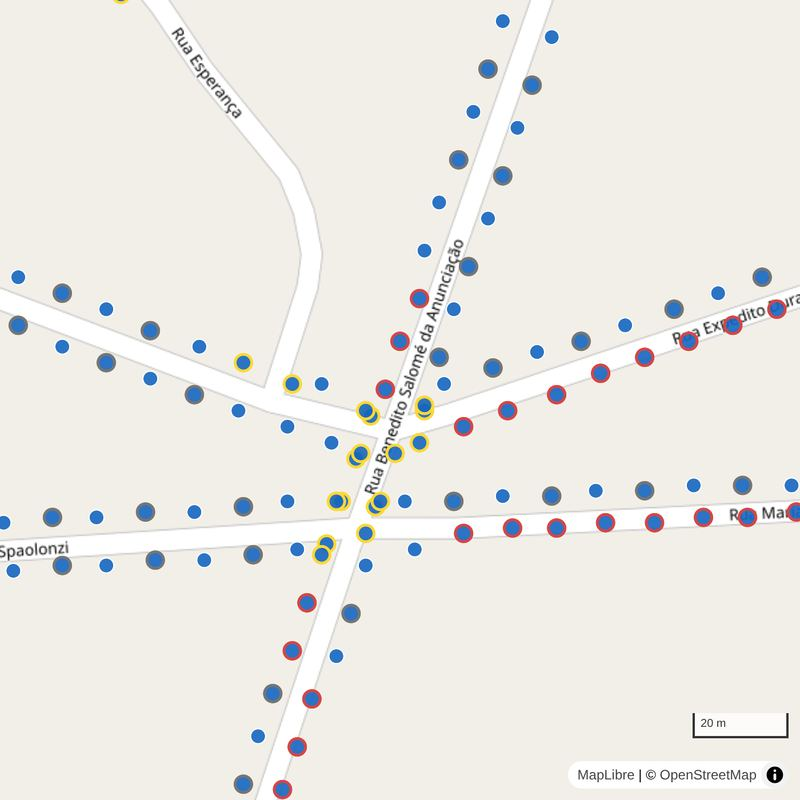
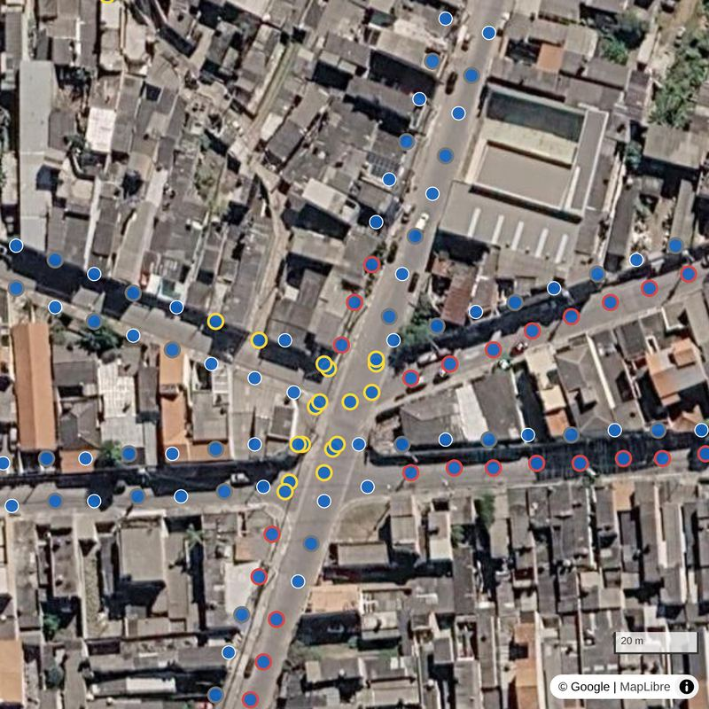
Corte transversal: a vaga só pode ficar na zona entre o meio-fio (com folga) e a fachada mais próxima. Sem zona segura, a vaga não é gerada ali — vira uma "vaga inviável" no mapa, não um ponto forçado numa posição ruim.
5 · osm_overture
O mesmo deslocamento do método 3, mas checado contra as edificações da Overture: a vaga nunca passa da fachada do prédio mais próximo. Corrige o maior risco do método 3 — vagas sobre telhados — sem depender do IBGE.
Raios medem a fachada de cada lado; onde o prédio está no alinhamento, não cabe vaga.
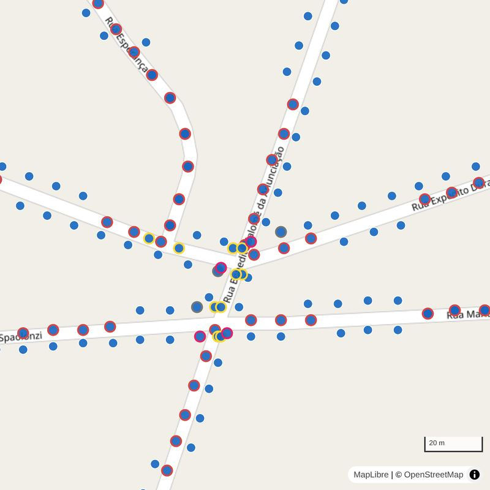
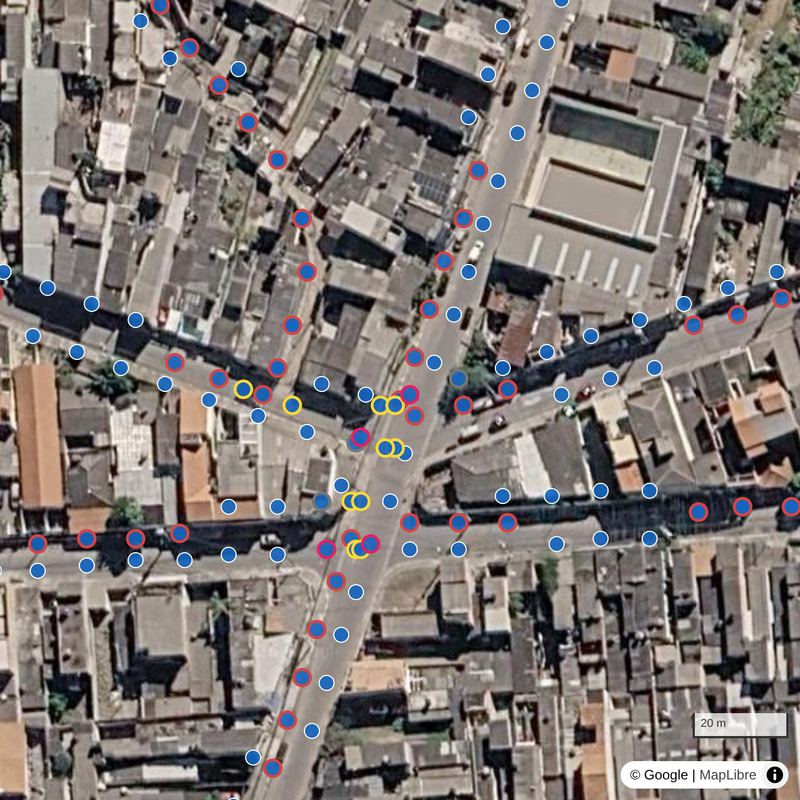
Duas variantes
Geramos as duas versões em paralelo, para cada um dos cinco métodos, para comparar o resultado de cada critério sem precisar reprocessar o restante do pipeline.
Em ambas, a distância mínima entre duas vagas é sempre o espaçamento da variante: 10 m fixo na primeira; na segunda, 6, 8 ou 11 m conforme o porte da maior das duas vagas — mesmo quando uma delas é de canteiro central.
Cobertura de copa
Além da posição, cada vaga leva um atributo a mais: o percentual de cobertura de copa que um raster de satélite registra ao redor dela. É um atributo, não um critério de exclusão — nenhuma vaga sai do conjunto por causa dele. Serve para filtrar e priorizar no mapa, por exemplo escondendo as vagas que já têm muita copa por perto.
Pixels de 10 m, ano de 2020, em classes de 10 % (0, 20, 30 … 100). É a fonte padrão, usada em Suzano, Sorocaba e Tremembé. Não tem dado em Santa Catarina nem no extremo sul do Rio Grande do Sul.
Pixels de cerca de 28 m (1 arco-segundo), ano de 2010, percentual contínuo de 0 a 100 estimado com imagens Landsat. É a alternativa para onde o GFW não cobre — hoje, Florianópolis. Mais antiga e mais grossa que a primeira.
Cada vaga registra a fonte de que veio o valor, e o mapa a mostra no popup. Como resolução, ano e definição diferem, os percentuais não são comparáveis entre fontes — dá para comparar vagas de um mesmo município, não Suzano com Florianópolis.
Em volta de cada vaga desenhamos um círculo com raio de metade do espaçamento da vaga: assim, os círculos de duas vagas vizinhas se encontram sem se sobrepor. O valor da vaga é o maior percentual entre todos os pixels que esse círculo toca, mesmo que só encoste na borda do pixel.
O pixel onde a vaga cai tem 30 % de copa, mas o buffer encosta em outros três; vale o maior deles, 80 %. Os pixels que o buffer não toca (esmaecidos) não contam.
Usar o máximo, e não a média, é uma escolha deliberada: basta haver copa consolidada dentro do raio para a vaga ser marcada, o que é o lado seguro para quem quer evitar plantar onde já há árvore. Pixels sem dado ficam de fora do cálculo; se todos os que o buffer toca forem sem dado, a vaga fica com o valor vazio — e o filtro do mapa nunca a esconde.
Em Suzano, Sorocaba, Tremembé e Florianópolis, o popup de cada vaga mostra o percentual, o raio usado e a fonte, e o painel tem o filtro Cobertura de copa máxima, que esconde as vagas acima do valor escolhido. A camada Cobertura de copa (raster), desligada por padrão, desenha o próprio raster sob as vagas — transparente onde não há copa ou onde é água.
O raster não é lido direto dos provedores pelo navegador: eles não liberam esse acesso, e o GFW ainda exige chave e usa links que expiram. O pipeline baixa só o recorte de cada município e o publica como imagem estática (de 0,2 a 1,1 MB). Os créditos são do GFW/WRI e do GLAD/Universidade de Maryland.
Pipeline
Reproduzível do zero para qualquer município brasileiro com um código IBGE cadastrado.
Limite do município, malha de vias e obstáculos.
01_download_osm.py
Pegadas de prédios via Overture Maps.
02_download_buildings.py
Gera os cinco métodos x duas variantes de espaçamento, com as mesmas regras comuns.
03_allocate_slots.py
Formato compacto e atualização do manifesto.
04_export_webmap.py
Duas etapas opcionais acrescentam a cobertura de copa:
02b_download_canopy.py baixa o recorte do raster do município (com --fonte glad_30m
para o GLAD) e 03b_add_canopy_cover.py grava o percentual em cada vaga, depois do 03 e antes do 04.
Resultado
Estes números vêm do mesmo manifesto que alimenta o mapa — do método de produção (face de quadra, IBGE) — e atualizam sozinhos a cada novo município ou reprocessamento.